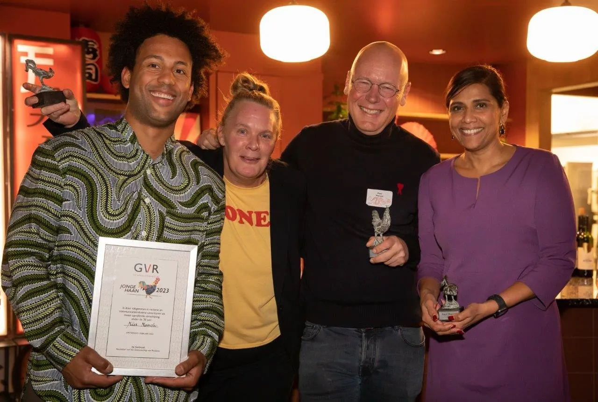
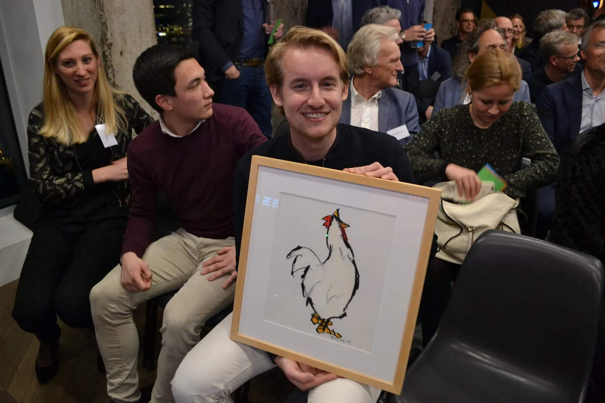
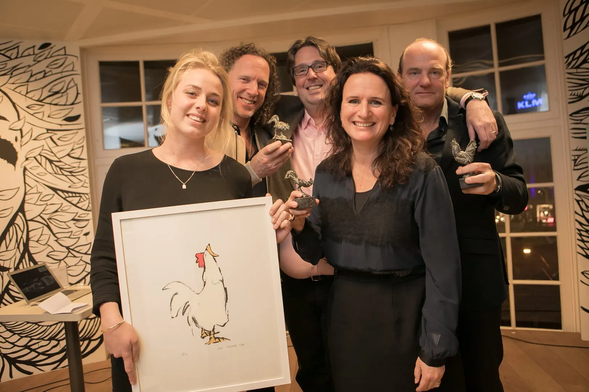

§03 Erelijst · 1992 tot 2026
De Hanen
Coq de Grand Honneur. Voor wie in een hele loopbaan veel voor het vak heeft betekend.
Coq d'Honneur. Voor vakgenoten met een opvallende prestatie in het afgelopen jaar.
Jonge Haan. Voor jong talent onder de dertig.
Bron: archief GvR.
In 2022 werd geen Hanendiner gehouden. Na de editie van 4 oktober 2021 volgde die van februari 2023.
Mary Hoogerbrugge is de enige die alle drie de Hanen won: Jonge Haan 1999, Coq d'Honneur 2014 en Coq de Grand Honneur 2021.



Voor de Hanen
1957De Gouden Tulp. Ingesteld voor het dertigjarig bestaan, vanaf 1959 om de twee jaar uitgereikt door het Europese comité van de International Advertising Association, voor de beste reclame voor een Nederlands product in het buitenland.
1958De Kristallen Bel. In 1958 ging hij als vierde naar J.F. Tempel van Unilever.
1960De jaarprijzen. Voor de beste reclame per vorm. In 1965 onder meer voor Davitamon, het Zuivelbureau en KLM.
1963De Willem Grollenberg-prijs. Uitgereikt tot 1982. In 1966 aan de vertrekkende voorzitter Van Andringa de Kempenaer.
De oudste Haan op de erelijst is de Jonge Haan van 1992.